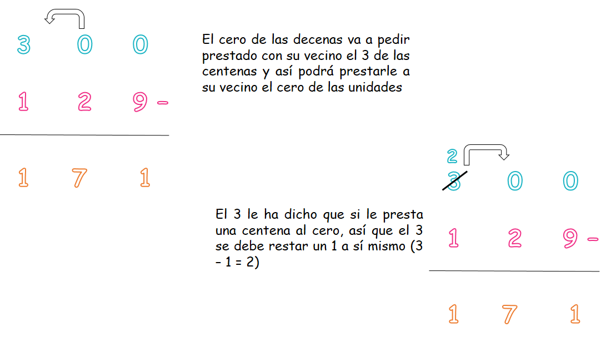

Repaso de la resta
En este capítulo vamos a recordar la resta.
¿Qué es una resta y para qué nos sirve?
La resta es la operación inversa a la suma, es decir, en la resta no agregamos sino que quitamos. Es por esto que la resta nos sirve para averiguar cuánto nos queda de algo a lo cual le quitamos una parte, para comparar la diferencia entre 2 o más números.
Debes recordar antes:
Vamos a recordar primero los términos de la resta:
El Minuendo es la cantidad total a quién le voy a quitar una parte. Esta cantidad siempre es mayor que el sustraendo.
El Sustraendo es la cantidad que voy a quitar. Esta cantidad siempre es menor que el minuendo.
La Diferencia es lo que me queda después de realizar la resta. Esta cantidad siempre es menor que el minuendo y el sustraendo.
- ¿Qué vamos a aprender?
- Restas desagrupando (Repaso)
- ¿Qué hacer cuando el “vecino” no me puede prestar?
- La prueba de la resta
(1)Restas desagrupando:
Recuerda que hay ocasiones en las cuales debemos “prestar con el vecino”, es decir prestar una decena o una centena (o incluso algo más) con el número que tenemos al lado izquierdo con el fin de poder restar una cifra menor con una cifra mayor. A esta acción se le llama “desagrupar”.
Observa:
Observa que el cero de las decenas es menor que el 2, y a cero no le puedo quitar una cantidad mayor, así que el 2 le prestó una centena al cero, como el 2 prestó este se resta así mismo un 1 (2 - 1 = 1) y queda en 1, mientras que el cero que recibió una centena se suma a sí mismo un 10 en las decenas (0 + 10 = 10) quedando en 10.
Recuerda que 10 decenas son 100.
(2)¿Qué hacer cuando el “vecino” no me puede prestar?
Cuando tenemos dos números seguidos que son menores a las cantidades que necesito restar debemos esperar a que el vecino preste con su vecino más cercano.
Observa:

Tip: Cuando tenemos dos ceros juntos que necesitan prestar, siempre el segundo cero queda en 9 al prestarle al primer cero, y el primer cero queda siempre en 10.
(3)La prueba de la resta:
Para saber si hemos hecho bien el procedimiento de una resta podemos comprobarlo con la prueba. Este es un procedimiento muy sencillo que podemos usar siempre.
Observa:
Regla:
Para la prueba de la resta debemos usar esta fórmula: “Sustraendo + Diferencia = Minuendo”.
Observa la siguiente situación problema de sustracción:
Aquí debemos hacer una resta.
Regla:
Cuando vas a hacer una resta recuerda ubicar la cantidad mayor encima de la cantidad menor.
Así:
Ahora vamos a comprobarlo usando la prueba de la resta:
Material extra para trabajar la resta:
En este enlace podrás encontrar una ficha de trabajo sobre la prueba de la resta y situaciones problema de la resta creada por Fichasparaimprimir.com.
Vídeo orientativo::
En este enlace encontrarás un vídeo sobre la prueba de la resta creado por matecitos.com.